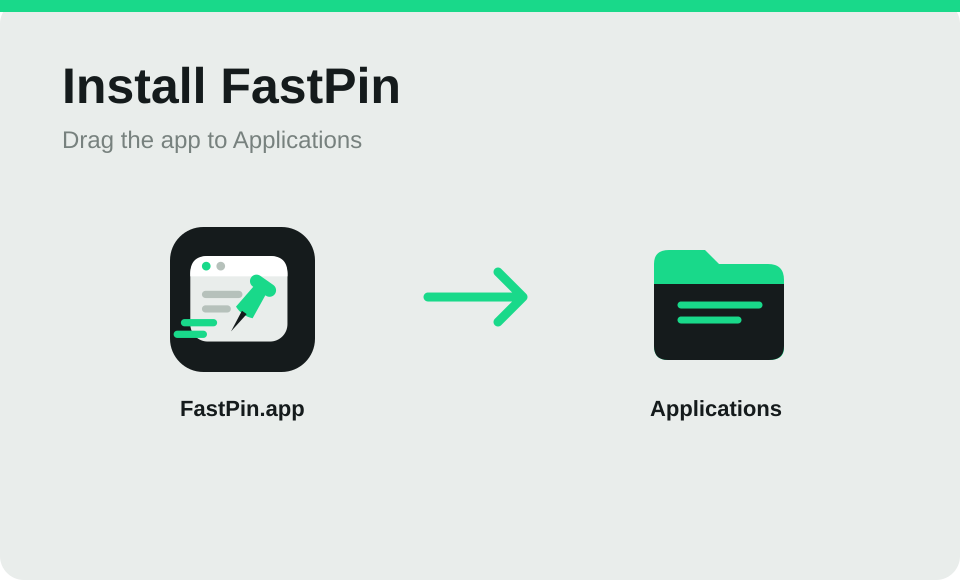
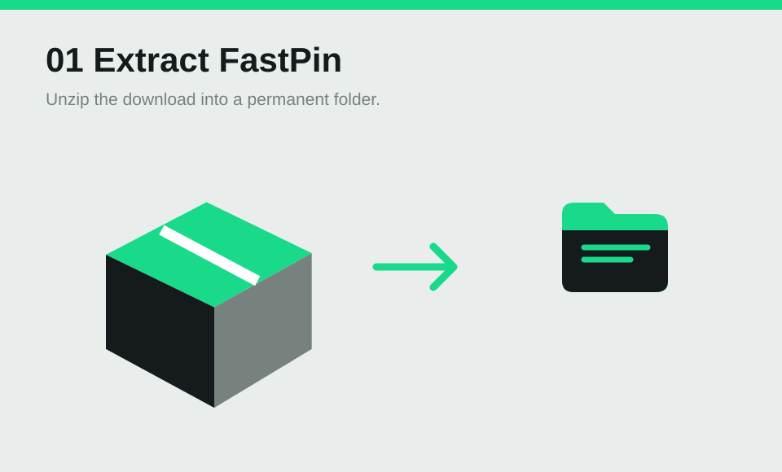
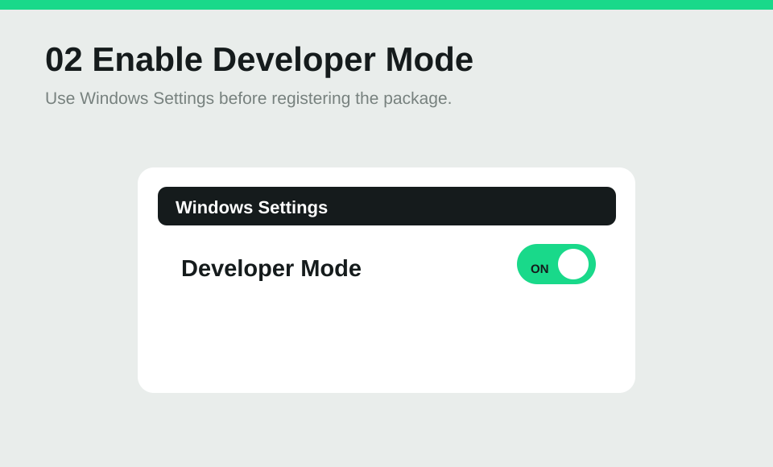

翻译选中的文字
连按两下 Ctrl，框住文字松开，翻译卡片就出现在旁边。剪贴板里的内容不会被覆盖。英译中目前输出繁体中文。
deadline
截止期限，最後期限，期限，死線，限期
CC-CEDICT · 离线在线
免费 · 开源 · macOS 和 Windows
框选屏幕上任意区域，画上重点，让它浮在工作窗口上方。一个快捷键，就能从任何地方翻译或复制文字。
最新预览版 · 无需账号，不追踪
拖动框选一块区域，或点击窗口、界面元素。按 Tab 切换检测方式。
P 画笔、A 箭头、R 矩形、T 文字，随时可以撤销、重做。
按空格键贴到桌面。拖动移动、滚轮缩放，鼠标停在上面按空格键调出工具。
功能
连按两下 Ctrl，框住文字松开，翻译卡片就出现在旁边。剪贴板里的内容不会被覆盖。英译中目前输出繁体中文。
截止期限，最後期限，期限，死線，限期
框选任意区域，里面的文字直接进入剪贴板。识别全程在你的电脑上完成。
鼠标移过去按 C。Shift 切换 HEX 和 RGB，方向键一次移动一个像素。
画笔、箭头、矩形和文字，颜色随你选。点一下已有的文字就能修改。
贴图关早了？一键恢复上一张，标注和缩放都还在。
使用指南
截取示例 JSON，固定后边写代码，边核对字段。
保留修改前的组件画面，再核对新版的文字与间距。
快捷键
默认快捷键都在左手范围内，也都能在设置里修改，鼠标侧键也可以。
告诉我们卡在哪一步 · GitHub
预览版尚未经 Apple 公证。打开 DMG 并拖进“应用程序”；如果打开被拦截，请看下方安装说明。

预览版尚未经过 Apple 公证。如果首次打开被 macOS 拦截，请参考 Apple 的说明。引导会自动检查“屏幕录制”、“辅助功能”和“输入监控”。辅助功能用于元素检测和鼠标快捷键；输入监控用于两种双击手势。
开发者预览版：需要开启“开发者模式”并用 PowerShell 注册一次。请解压到固定文件夹，详见下方说明。


先开启“开发者模式”，在该文件夹打开 PowerShell，运行 Add-AppxPackage -Register "$PWD\AppxManifest.xml"。Windows 版目前需要手动更新。